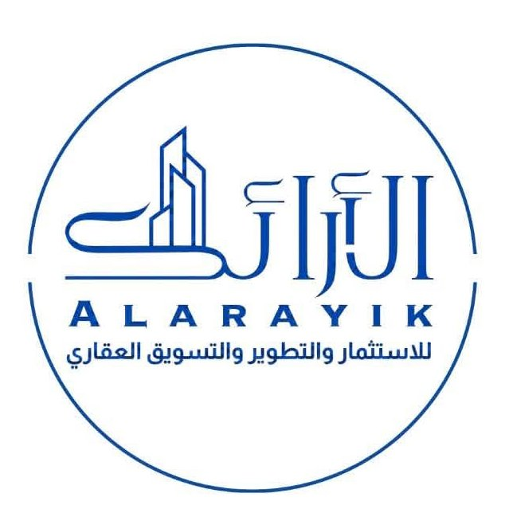
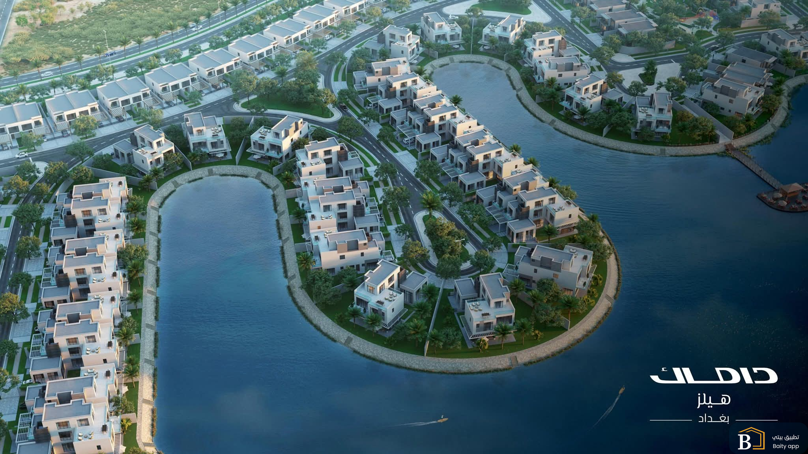
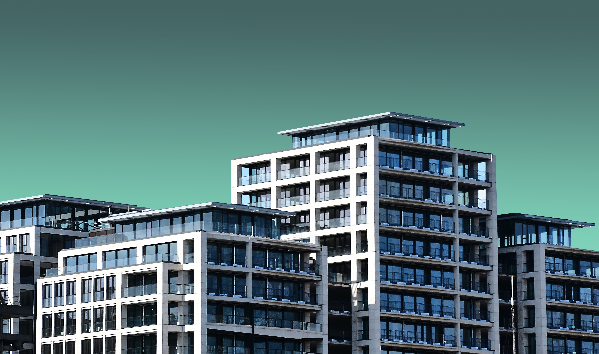
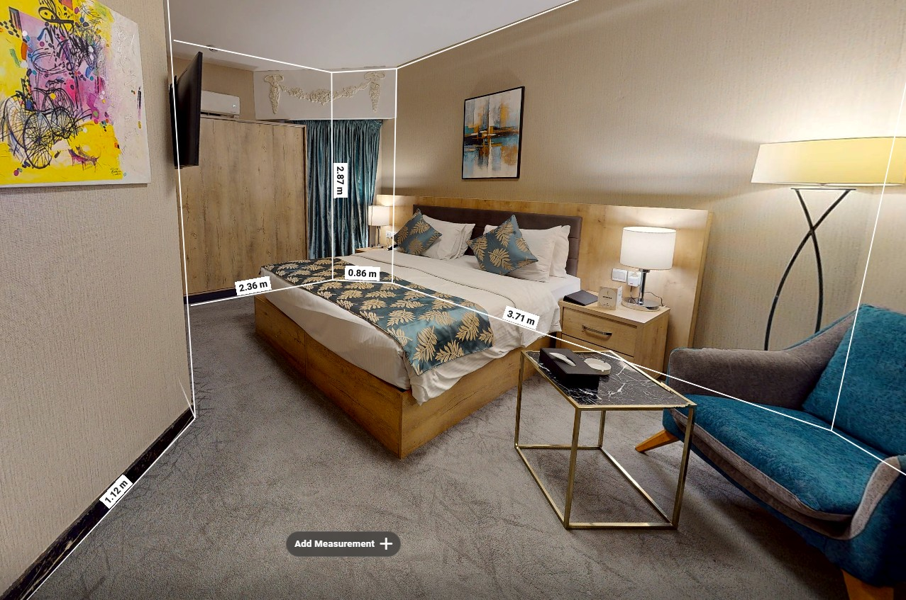
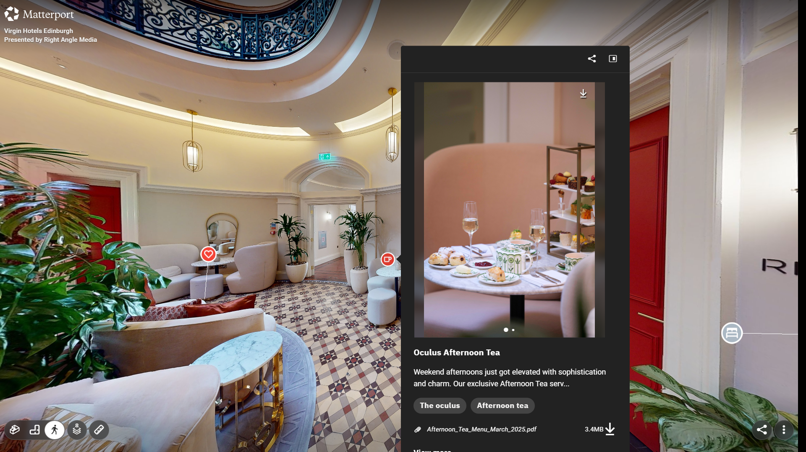
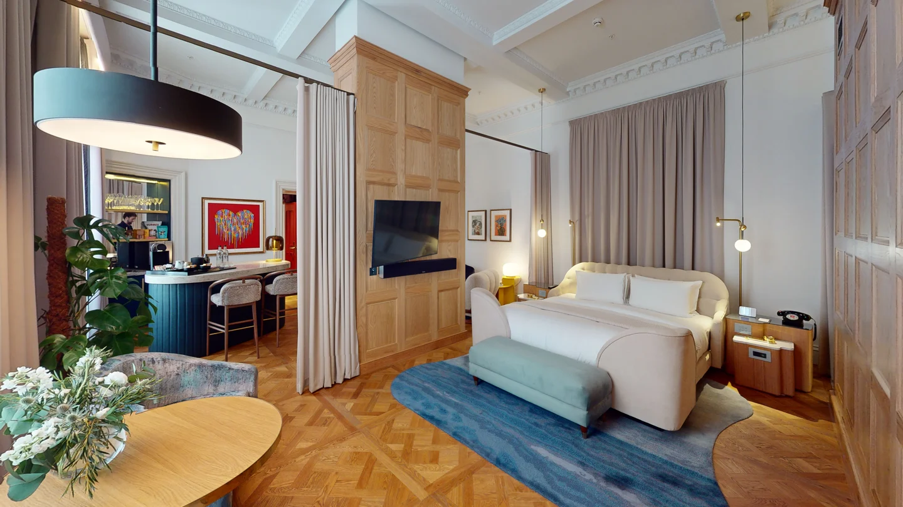
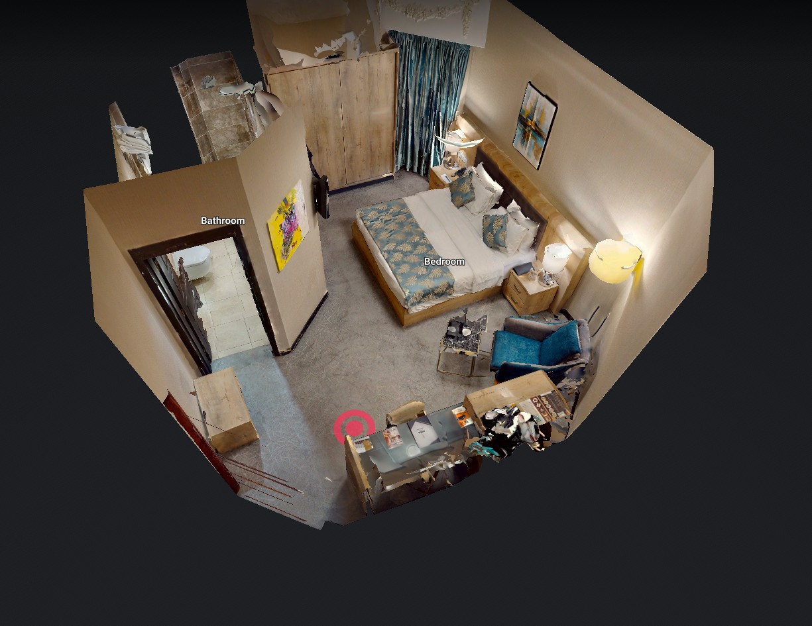
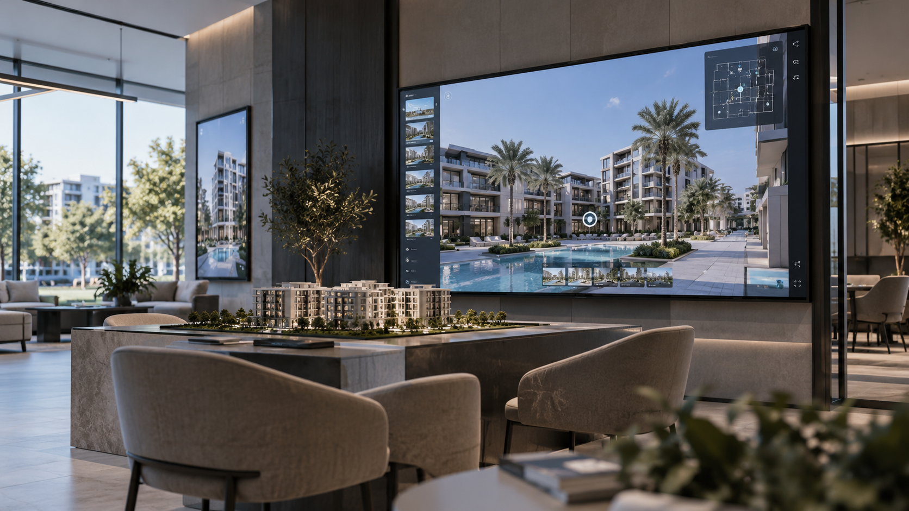

حضور رقمي يليق بالمشروع
واجهة رقمية تعكس مستوى المشروع وتقدم محتواه بصورة احترافية ومنظمة.


مقترح مقدم من أبعاد العراق
موقع إلكتروني وجولات افتراضية متكاملة لعرض العقارات، تفاصيلها ومساحاتها ضمن تجربة رقمية واحدة.

01
التطوير الرقمي لعرض العقارات
من الضروري أن تعكس المنظومة الرقمية للمشروع مستوى فخامته، من خلال موقع إلكتروني وجولات افتراضية تقدم العقار بصورة احترافية وواضحة، وتمنح العميل تجربة أسهل في استكشاف المشروع والتعرّف على تفاصيله قبل الزيارة.
واجهة رقمية تعكس مستوى المشروع وتقدم محتواه بصورة احترافية ومنظمة.
جمع تفاصيل العقار والصور والمساحات والمعلومات المهمة في مكان واحد.
إتاحة التعرف على العقار ومساحاته وتفاصيله من خلال الجولات الافتراضية.
إمكانية مشاركة المشروع عبر رابط مباشر، الحملات الرقمية وQR Code.
02
الموقع الإلكتروني
موقع إلكتروني مخصص للمشروع يجمع معلومات العقارات، الصور، المساحات، التفاصيل والجولات الافتراضية ضمن تجربة واحدة واضحة وسهلة الاستخدام.
ويمنح المشروع حضوراً رقمياً مستقلاً يمكن استخدامه في التسويق، الحملات والإعلانات.

تنظيم معلومات المشروع والوحدات والصور والتفاصيل ضمن موقع واحد.
إمكانية ربط كل عقار بصوره، معلوماته والجولة الافتراضية الخاصة به.
يمكن استخدامه في الحملات، الإعلانات، وسائل التواصل والمراسلات المباشرة.
03
الجولات الافتراضية
الجولات الافتراضية تمنح العميل إمكانية التجول داخل العقار وفهم المساحات والتوزيع والتفاصيل بصورة تفاعلية، مع إضافة نقاط ذكية توضح المعلومات والمميزات داخل الجولة نفسها.
إمكانية مشاهدة المشروع والتنقل داخله بصيغ متعددة تساعد على فهم المساحات والتوزيع.
إضافة معلومات توضيحية داخل الجولة مع إمكانية أخذ القياسات والرجوع إلى تفاصيل المساحات.
إمكانية استخراج صور عالية الدقة حتى 4K ومقاطع فيديو لاستخدامها في الحملات والمحتوى الرقمي.
تشغيل الجولة عبر رابط مباشر، QR Code، شاشة لمس داخل مركز المبيعات أو نظارات VR.
04
إمكانات الجولة الافتراضية
إلى جانب استكشاف العقار، توفر الجولة أدوات ومحتوى يمكن الاستفادة منه في العرض، القياس والتسويق.




نماذج فعلية لتجربة الاستكشاف والتنقل داخل المشاريع.
نموذج الجولة 01
نموذج الجولة 02
نموذج الجولة 03
05
استخدام المنظومة في التسويق والمبيعات
الموقع الإلكتروني والجولات الافتراضية لا تقتصر فائدتهما على عرض المشروع، بل يمكن استخدامهما في نقاط التواصل المختلفة مع العميل، من الإعلان الأول وحتى زيارة مركز المبيعات.

عرض المشروع والوحدات والمعلومات والجولات من رابط رسمي واحد.
تشغيل الجولات على شاشة كبيرة أو شاشة لمس أثناء شرح العقار للعميل.
نقل العميل مباشرة من الإعلان أو المطبوع إلى صفحة المشروع أو الجولة المطلوبة.
عرض العقار من خلال نظارات الواقع الافتراضي لتقديم تجربة أكثر تفاعلاً أثناء التسويق.
06
نطاق التنفيذ
يشمل المشروع بناء منظومة رقمية متكاملة لعرض العقارات، من تطوير الموقع الإلكتروني إلى إنتاج الجولات الافتراضية وتجهيز أدوات العرض والمشاركة.
تصميم موقع متجاوب يعرض المشروع والعقارات والمعلومات بطريقة واضحة ومنظمة.
إنشاء هيكل لعرض الصور، المساحات، المعلومات والتفاصيل الخاصة بكل عقار.
تصوير ومعالجة الجولات التفاعلية وتجهيزها للعرض على الموقع والمنصات المختلفة.
ربط كل عقار بجولته الافتراضية ضمن تجربة واحدة سهلة الاستخدام.
استخراج الصور والفيديوهات والمواد القابلة للاستخدام في الحملات والمحتوى التسويقي.
اختبار الموقع والجولات على الهاتف والحاسوب والشاشات المختلفة قبل الإطلاق النهائي.
07
مدة التنفيذ
تختلف المدة النهائية حسب جاهزية العقارات للتصوير، توفر المحتوى والمعلومات، وعدد المراحل المطلوبة للمراجعة والاعتماد.
استلام المعلومات، تحديد هيكل الموقع وترتيب جدول التصوير.
تنفيذ الجولات الافتراضية وتجهيز الصور والمحتوى.
بناء الموقع وإضافة العقارات والجولات والمحتوى.
الاختبار، الملاحظات النهائية، ثم إطلاق المشروع.
08
الاستثمار
التكلفة تشمل تنفيذ المنظومة الرقمية للمشروع، بينما تغطي الخدمة السنوية استضافة وصيانة الموقع والجولات الافتراضية واستمرار جاهزيتها للاستخدام.
| الخدمة | التفاصيل | القيمة |
|---|---|---|
| تنفيذ المشروع | تصميم وتطوير الموقع الإلكتروني + إنتاج وتجهيز الجولات الافتراضية + الدمج والإطلاق | 60,000 USD |
| الصيانة والاستضافة السنوية | استضافة الموقع والجولات الافتراضية، الصيانة والمتابعة الفنية السنوية | 5,000 USD / سنوياً |
تبدأ الخدمة السنوية بعد اكتمال تنفيذ المشروع وإطلاقه.